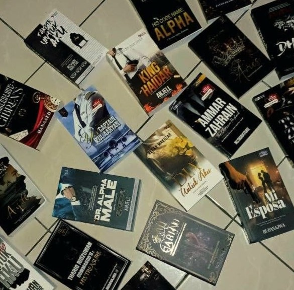
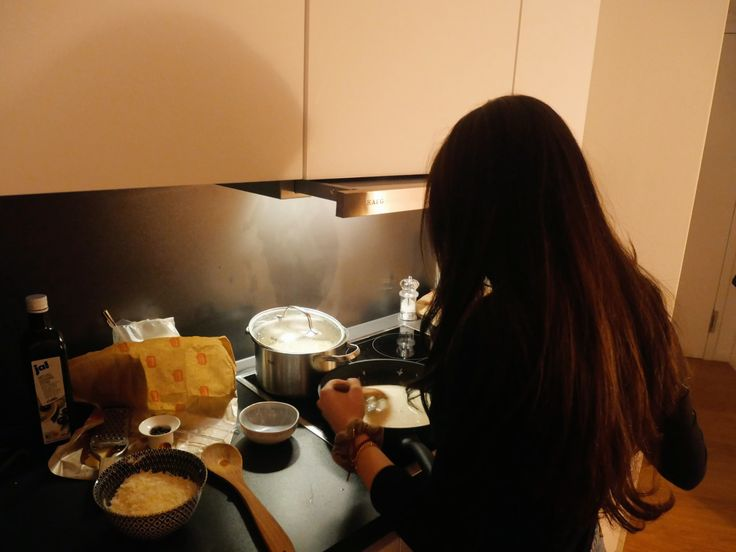

THE LITTLE THINGS SHE LOVES
Her Passions.
In the little things, she finds joy. In some, comfort; in others, inspiration. These are the hobbies, passions, and simple pleasures that make her days a little brighter and her heart a little fuller.
A LITTLE PIECE OF HER
Things That Make Her Happy
Everyone has their own way of enjoying life. For Felicia, it can be found in quiet moments with a book, experimenting in the kitchen, or simply listening to music and letting herself get lost in the melody.
They may seem like simple hobbies, but sometimes the simplest things are the ones that bring the most comfort.

Reading Books
There is something special about opening a book and stepping into a different world. Reading allows her to explore different stories, discover new perspectives, and enjoy a little escape from everyday life.
Whether it is a few pages before bed or spending time with a story she enjoys, books give her a peaceful moment of her own.
"A little escape between the pages."
Cooking
Cooking is one of the little things she enjoys, especially when she gets to turn simple ingredients into something delicious. It gives her a chance to be creative, try different things, and enjoy the process of making food.
From preparing a favourite meal to experimenting with recipes, the kitchen can be a place where creativity meets comfort.
"Made with a little love and a lot of flavour."Listening to Music
Music is always there for different moods. Whether she is relaxing, doing something, travelling, or simply spending time alone, a good song can make the moment feel different.
She enjoys listening to alternative music and dark R&B, finding comfort in the sounds, lyrics, and feelings that certain songs bring.
"Some feelings are easier to hear than explain."A LITTLE MORE OF HER
Finding happiness in her own little world.
These are the things she loves, the moments she enjoys, and the little pieces of life that make her story uniquely hers.
Back To HERSTORY →